Supongamos que tenemos que ir al hospital para una prueba dentro de 4 días a las 9:10am.
Como es una cita muy importante, es buena idea tener un recordatorio el día anterior.
Luego, puedes crear un segundo recordatorio el mismo día para que te avise cuando tengas que salir de casa. Para evitar llegar tarde, has decidido que debes salir de casa 1 hora y 45 minutos antes.
Finalmente, crearemos un tercer recordatorio para la cita en el hospital. Esto nos permitirá ver cuánto tiempo tenemos para la cita en cualquier momento.
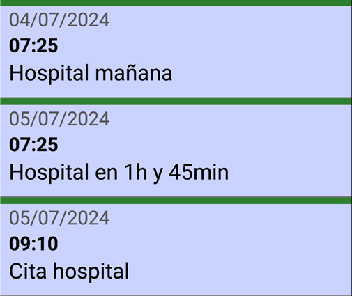
Puedes tomar un bolígrafo y papel y hacer algunos cálculos, o puedes usar SECURElogBook y crear que necesitas con unos pocos toques en la pantalla.
SECURElogBook cuenta con ventanas para sumar o restar tiempo sin errores, por lo que programar tareas es muy fácil. Además, cuenta con un botón para crear copias de registros.
1. Abra SECURElogBook y vaya a la ventana principal, con fondo azul:

2. Cree un nuevo registro pulsando el botón indicado con la flecha amarilla (imagen de arriba).
3. Una vez abierta la ventana del creador (fondo verde) podemos editar el registro:
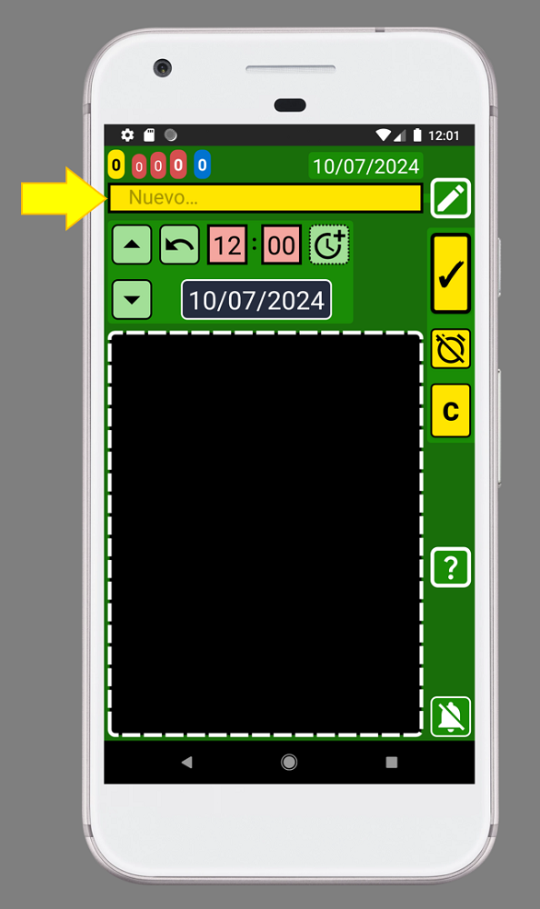
4. Llame a esta lista "Cita hospital" agregando el texto dentro de la caja de texto indicada con la flecha amarilla (imagen de arriba):
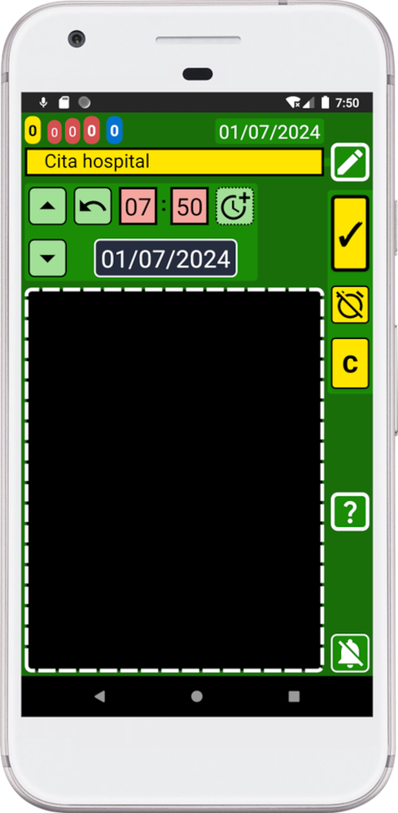
5. Ahora debemos fijar la fecha y hora para dentro de 4 días. Suma 4 días a la fecha actual, como hoy es 01/07/2024 la fecha será el 05/07/2024 a las 9.10am:
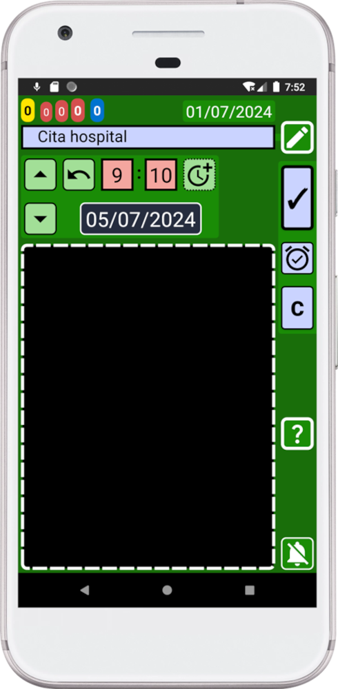
6. Presione el botón "C" para crear una copia de este registro:
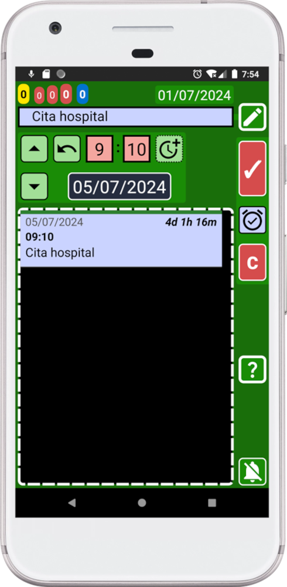
7. Cambie el texto para crear el siguiente registro. Cambie el texto por "Hospital en 1h y 45min".
8. Para crear otra copia, debemos cambiar la hora. Recuerda que queremos salir 1h y 45min antes de la cita en el hospital. Para cambiar la hora, puedes hacer el cálculo mentalmente o puedes usar la ventana dedicada para calcular la hora manteniendo presionado este botón
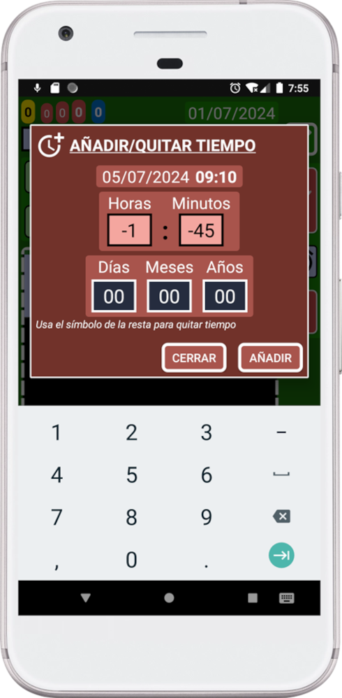
9. Pulse el botón "AÑADIR".
10. Presione el botón "C" para crear una copia de este registro:
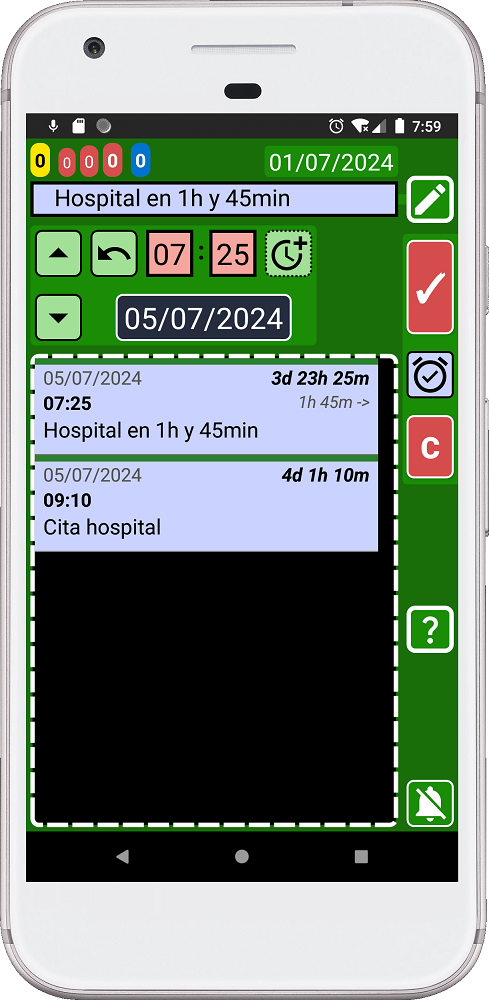
11. Cambie el texto para crear el siguiente registro. Cambie el texto por "Hospital mañana".
12. Selecciona el día anterior pulsando el botón azul de fecha para abrir el calendario:
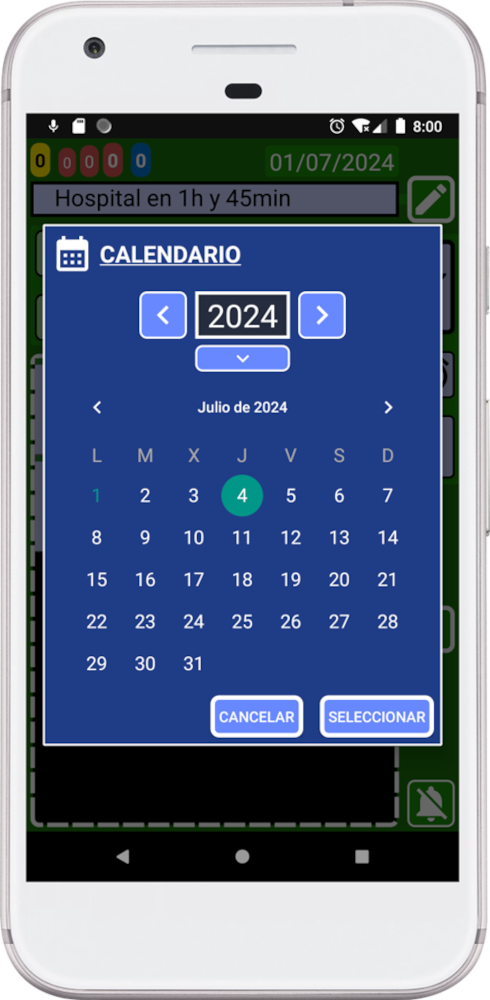
13. Presione el botón "SELECCIONAR".
14. Presione el botón "C" para crear una copia de este registro:
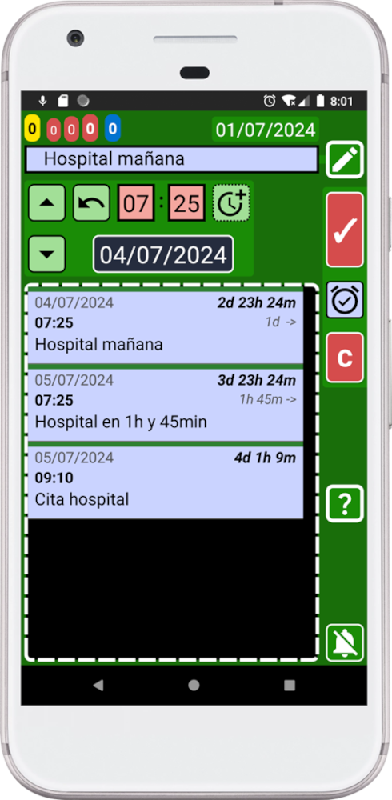
15. Presione el botón atrás de su dispositivo para volver a la ventana principal (azul):
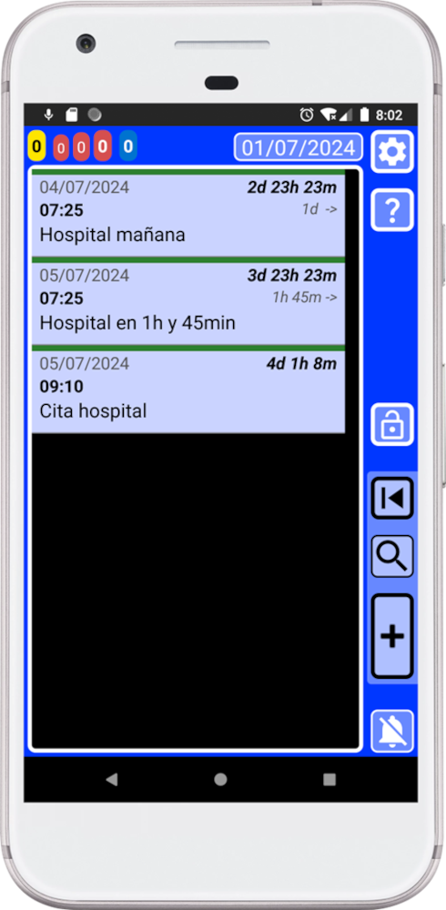
¡Felicitaciones, usuario avanzado de SECURElogBook! Acabas de crear varios registros rápidamente. ¡Ahora tiene el control total de la situación!
Gracias al botón de copiar podemos crear múltiples registros en pocos segundos:
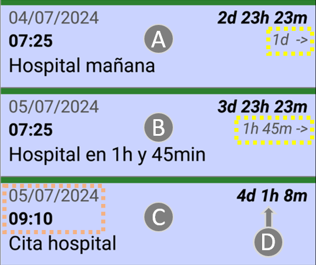
En pocos segundos y sin cálculos mentales que pudieran estar equivocados, creamos todo lo que necesitamos para tener un control total. Hemos creado un registro un día antes (A). Un registro para avisarnos cuando tenemos que salir de casa (B). Decidimos que teníamos que salir de la casa 1h y 45min antes para estar seguros, y se puede ver que está correcto. Finalmente, tenemos un registro con la cita en el hospital, nuestro objetivo. La hora indicada por (D) cambiará cada minuto, por lo que en cualquier momento sabrás cuánto tiempo te queda para tu cita:
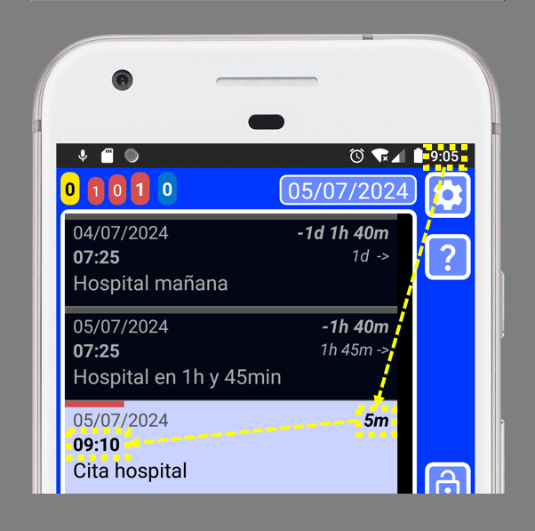
Así es como se verá la pantalla a las 9:05 a.m., 5 minutos antes de su cita en el hospital a las 9:10am.
¡Ahora eres un usuario avanzado de SECURElogBook! Ahora puedes crear múltiples registros rápidamente para tener un control total sobre la situación.
¡Con SECURElogBook, la información entra y las preocupaciones salen! 😉